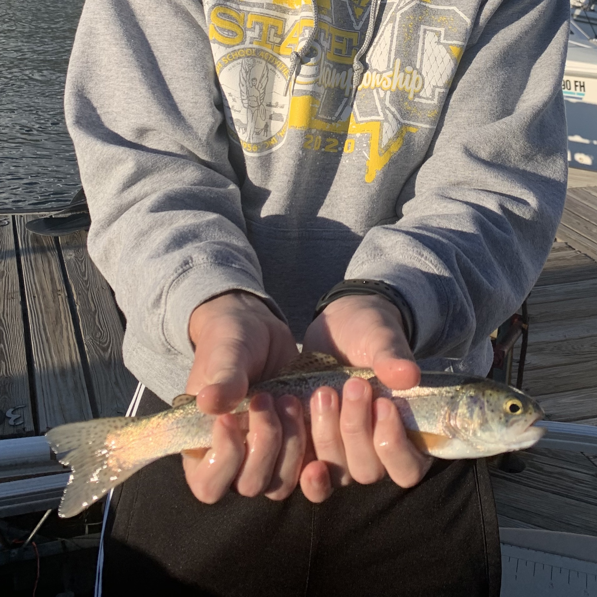
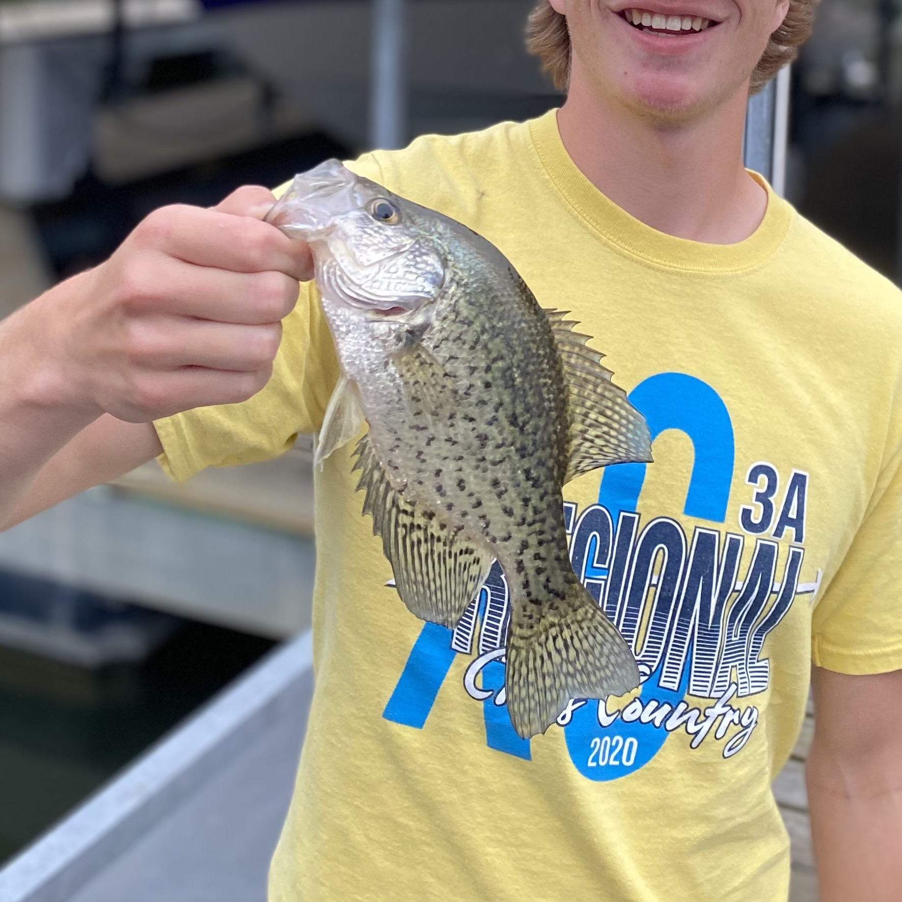
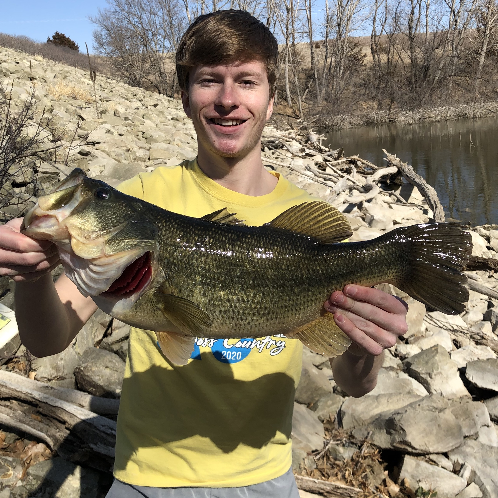
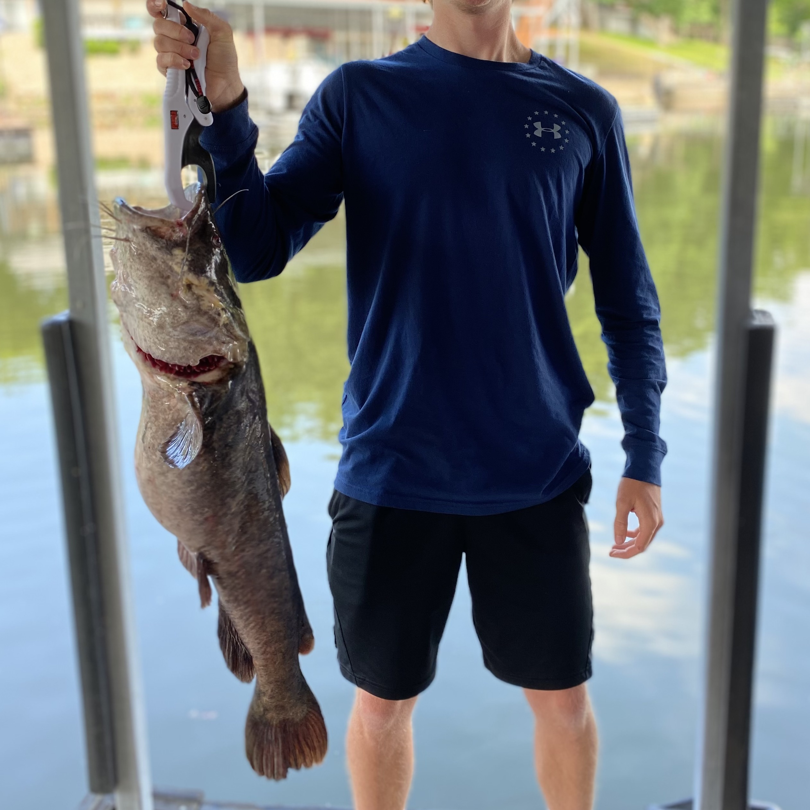

This is a Rainbow Trout. I caught this on a guided fishing trip on
Lake Dillion, CO.

A Saugeye is a combination between a Sauger and a Walleye. One of my
favorite catches in Norton, KS.

I have not caught very many, but this is a White Crappie. Good eating
fish and was caught in the Lake of the Ozarks, MO.

This is by far my greatest catch. It is a 5 lb largemouth bass caught
in Norton, KS.

Right here is a 15 lb catfish. We decided to catch and relase this one
insteaad of eat it and it was also caught in the Lake of the Ozarks,
MO.

This fish is a Freshwater Drum. It is not considered a good fish to
eat, but when you catch one they sure make it fun to reel it in.
Caught in Beloit, KS.